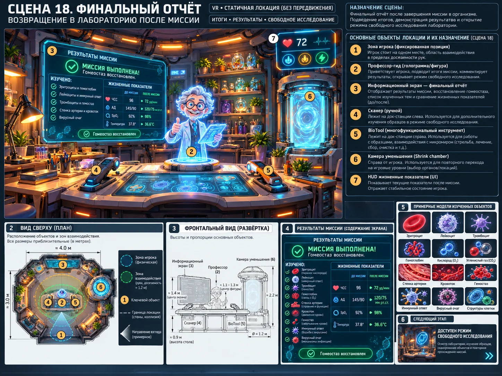

Scene 18 · финал
Финальный отчёт
Свести результаты миссии и открыть режим свободного исследования.

Сценарная последовательность
Показать список изученного
Показать выполненные действия
Сравнить финальные показатели
Реплика профессора
Разблокировать свободное исследование
Технические требования сцены
- Та же лаборатория, без новой локации.
- Отчёт собирается из данных прохождения и миниатюр существующих пресетов.
- После завершения переключается GameMode → FreeResearch.